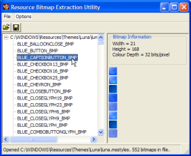

VB5 Bitmap Extractor (87K)
VB5 Bitmap Extractor (87K)
 VB6 Bitmap Extractor (80K)
VB6 Bitmap Extractor (80K)
 XP Explorer Toolbar Bitmaps (128K)
XP Explorer Toolbar Bitmaps (128K)
 15 May 2003
15 May 2003
On some systems the alpha channel was discarded before loading into the alpha-DIB section. This is fixed by using the LR_CREATEDIBSECTION option in the LoadImage call when reading the bitmap.
 Two code only solutions for displaying Common/Dialogs
Two code only solutions for displaying Common/Dialogs
 Reading Data from Local or External Library Resources
Reading Data from Local or External Library Resources
 IShellFolder Extended Type Library Version 1.2 (ISHF_Ex.Tlb)
IShellFolder Extended Type Library Version 1.2 (ISHF_Ex.Tlb)

Bitmap Extractor Utility
Extract embedded resource bitmaps from executables and DLLs at any colour depth
In a similar vein to the Icon Extractor utility, this article provides a resource extractor for Bitmaps in executables. By using an alpha-capable DIB Section from this site, it also breaks VB's StdPicture limitations and allows you to read and save 32-bit bitmaps, like the ones used in the XP Visual Styles theme files.
The Bitmaps Extractor
The extractor provided in the download is a fairly simple utility: you can open any Executable or DLL and then it will display a list of all the bitmaps within the resource in the left-hand TreeView. Clicking on any resource will display the bitmap information (size and colour depth) as well as rendering it, with alpha if necessary, in the preview area. Then you can save the bitmap out to disk. You can also save all the bitmaps from a single executable in one shot to a folder.
Some useful things you can do with it:
- Many application executables contain bitmap strips for use with their toolbars. This can be an easy way to get hold of a copy of the image you're looking for.
- You can get at the Explorer/IE toolbar images by inspecting Shell32.DLL (the XP 32 bit versions of these image strips are included in the download).
- You can get all the XP Visual Style resource bitmaps - see later in the article.
Extracting Resources
This code re-uses the classes from the article reading data from local or external library resources to read the list of bitmaps from an Exe or DLL. Whilst the original article demonstrated creating a StdPicture object from the resource, in this case I wanted to be able to extract 32-bit bitmaps with alpha channels, and save those. Unfortunately StdPicture discards the alpha channel which means you end up with a mess wherever the alpha is less than 255 (opaque). So instead this sample uses an Alpha DIBSection to hold the bitmap.
Using Alpha DIB Sections
One of the advantages of an Alpha DIBSection is that the bits are stored in local Windows memory for ease of access. If you read the article for that you'll see that when drawing a bitmap with per-pixel alpha set, you're irritatingly obliged to pre-multiply the R,G,B pixel values by the alpha component before drawing with TransparentBlt. Using an Alpha DIB Section makes it easy to do this; check the PreMultiplyAlpha routine with cAlphaDIBSection in the class.
On top of that, since you have access to the bits in the bitmap, you can save the data directly from the DIBSection to a BMP file on disk. That's what allows this sample to save to native 32-bit bitmaps. Remember that if you want to load them again in VB, you'll have to use the LoadImage API function rather than the LoadPicture method if you want to keep the alpha channel, or use GDI Plus instead.
Now For Some Fun...
If you were ever interested in where XP sources the images used to draw the XP Visual Styles components, you can use this utility to have a look. XP Visual Styles are actually installed as Windows theme, just like the way the original themes provided with the laughable Plus pack for Windows 9x used to be installed. However, the associated .theme file has an additional entry:
[VisualStyles] Path=%ResourceDir%\Themes\luna\luna.msstyles ColorStyle=NormalColor Size=NormalSize
This entry is deliberately undocumented by Microsoft as they want to keep control over the XP look and feel; however, on inspection, it appears that luna.msstyles is simply a Windows DLL which contains resources. So you can use any tool which allows to access to resources to have a look at it; if you use Visual Studio you can open the file if you make a copy and add a .DLL extension; however, note that current releases of Visual Studio do not support alpha bitmaps.
In fact, if you have a copy of a tool that allows you to make in-place changes to resources, like the popular ResHacker then you can start customising the themes to your own liking... but I'll leave that for your investigation (visit ThemeXP.org, read the details and don't install anything that looks nasty in Control Panel!)
To make copies of the images, just point the Bitmap Extractor utility at the luna.msstyles file (typically you will find this at WINDOWS\Resources\Themes\luna\luna.msstyles . You should find it contains some 500 or so bitmaps - which are divided into separate bitmaps for the Blue, Olive Green and Silver themes (the Olive Green style is actually named "Homestead" in the file; no doubt one of designers associated with the abysmal Windows Plus Pack themes had their hand in this).
Using this file you should find it rather simple, for example, to create an owner-draw button which renders using any of the XP styles but runs on any OS...
Wrap Up
That's it for Bitmap Extractor. If you find this useful, or have any feature suggestions, then please write. Incidentally, if you could write the code for your feature suggestion too then that would be better!